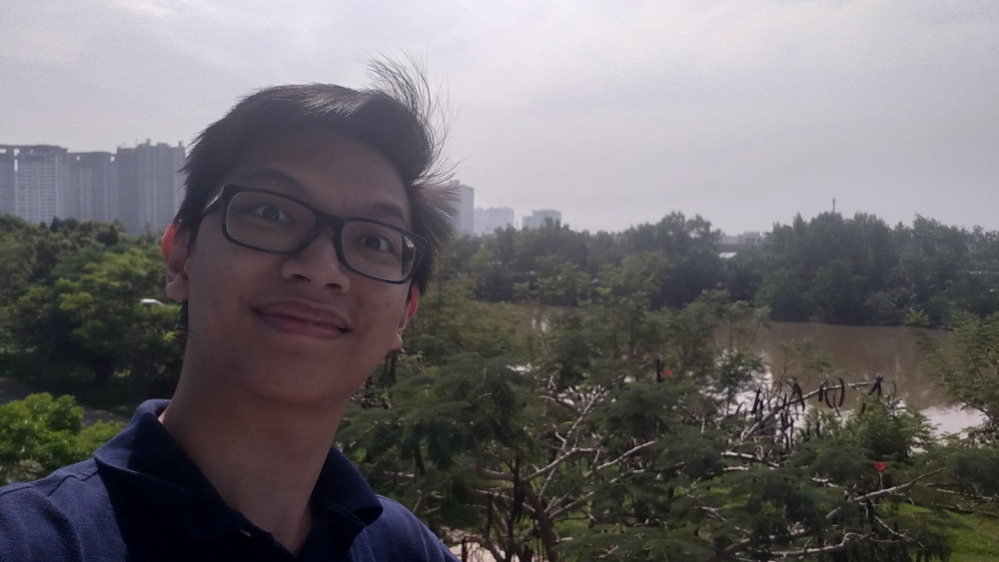

About me

Who is your tutor / instructor
Nguyen Minh Long
Who is your labber
Nguyen Minh Long
Have you any programming or web design experience?
Not exactly. I did setup a website using a template last semester so I at least know my way around HTML.
Do you see yourself as a programmer or designer, or both?
Right now I'm leaning forward with being a Front-end developer so I can see myself as both.
What has brought you to this course at RMIT?
I want to gain more experience in making my own website from scratch rather than buying or finding a template.
What are you hoping to get out of the course?
Atleast the basic understanding of CSS, Javascript and advance my knowledge in HTML.
Assignments allow for individual or paried work. What strengths do you have and what strengths would you like your assignment partner to have?
My strength would be when I'm finally in the rhythm, I rarely stop because I'm entirely focus into what I'm doing at the moment. Another strength of mine would be that I'm very flexible in what I'm doing, if I see that something doesn't work I will switch to something that does or when I can do something in a more efficent way I'll switch. As for my partner, I would like that person to be able to push me into my rhythm. Because it ussually takes me a long time to get into the rhythm to do anything.
What websites do you use the most? (NB: "family friendly" !)
I switch between Youtube and Reddit. Occasionally I go on Archive of Our Own for stories written by the users.
Do you have any interests or hobbies?
I enjoy reading fanfictions and build plastic models.